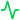

Sensor 1 - Monitoramento de Luminosidade
Última atualização 22/04 às 13:09

Ativo
Status do sensor200 PPFD
Luminosidade Média μmol/m/s16h
Horas em Exposição à Luz3
Alertas Fora do EixoDistribuição do Tempo Luz no Dia
Variação da Luminosidade (Últimas 11h)
.png) Sensor Operacional
Sensor Operacional
O sensor está ativo e monitorando corretamente a luminosidade. Tempo de exposição à luz: 16 horas por dia.
Alertas Registrados
3 alertas de iluminação fora do eixo ideal foram registrados hoje. Verifique os horários de pico de variação.